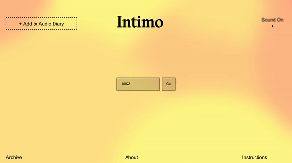
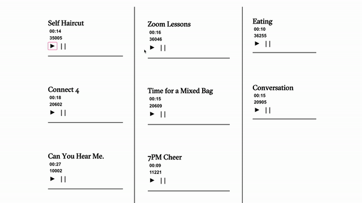

Key Features
Scheduled Radio
Feeling nostalgic? Eagerly wait for your audio to be played at a specific time on the Intimo radio as it will begin playing at a set time on a scheduled day. By using Radio.co, an all-in-one platform that lets users run their own radio station, we were able to schedule a live broadcast for the day we choose, and then set up an audio player on our site that streams that live broadcast.
Feeling nostalgic? Eagerly wait for your audio to be played at a specific time on the Intimo radio as it will begin playing at a set time on a scheduled day. By using Radio.co, an all-in-one platform that lets users run their own radio station, we were able to schedule a live broadcast for the day we choose, and then set up an audio player on our site that streams that live broadcast.

Generative Background
Be able to feel the another person’s environment since we can’t physically be present with the people we love. By using the openweather API, we were able to pull weather data(wind speed, temperature, and humidity) based on the user's zip code input. We also used P5.js to visually generate the weather-controlled ellipses, speed, and clarity of the background.
Be able to feel the another person’s environment since we can’t physically be present with the people we love. By using the openweather API, we were able to pull weather data(wind speed, temperature, and humidity) based on the user's zip code input. We also used P5.js to visually generate the weather-controlled ellipses, speed, and clarity of the background.

Recorder on Site
No need to use a third-party recording function. Our platform has a built in recording service to let you record in real time. Our team did extensive research to discover and utilize Recorder.js, a JavaScript library for recording audio in the browser as uncompressed pcm audio in .wav containers.
No need to use a third-party recording function. Our platform has a built in recording service to let you record in real time. Our team did extensive research to discover and utilize Recorder.js, a JavaScript library for recording audio in the browser as uncompressed pcm audio in .wav containers.

Archive Element
Explore through the Intimo sound archive and listen to a short glimpse of how others are spending their quarantine. Users are given the freedom to listen to one sound at a time, or play all of them at once, generating a chaotic orchestra of quarantine sounds.
Explore through the Intimo sound archive and listen to a short glimpse of how others are spending their quarantine. Users are given the freedom to listen to one sound at a time, or play all of them at once, generating a chaotic orchestra of quarantine sounds.
